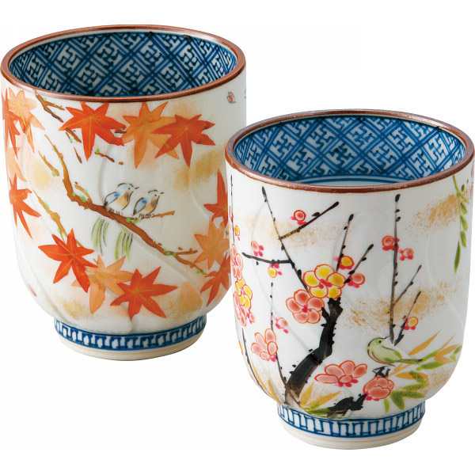
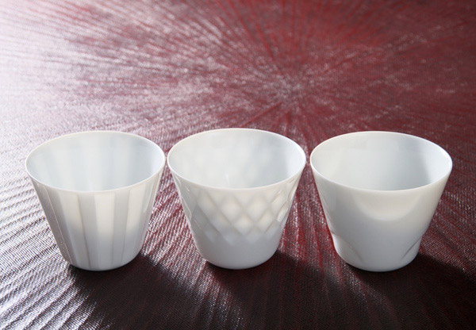
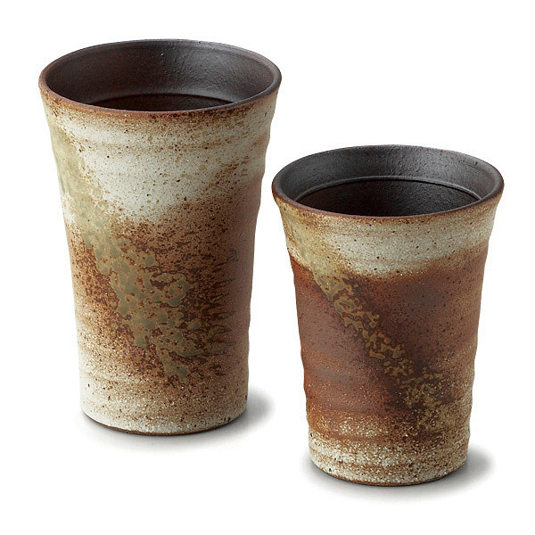

Kyo-Yaki and Kiyomizu-Yaki
Kyoto prefecture, Japan
Ceramic production in Kyoto seems to have started before 794 A.D, when the capital was transferred from Nara. Kyo-yaki and Kiyomizu-yaki have variety of shapes, design, colours and texture.
Mino-Yaki
Gifu prefecture, Japan
The region, Mino is one of the major production sites for pottery in Japan. It has started producing pottery since 10th century and increased with the growing popularity of the tea ceremony in the 16th century. White, black, green and yellow are commonly used on the original colour of clay.
Shigaraki-Yaki
Shiga prefecture, Japan
In this region, they seem to have started to produce since the early 8th century. They produced mostly unglazed pottery. They produced flower vases, umbrella stands, dinnerware, tiles, and so on. The simple and natural texture of them always attract us.